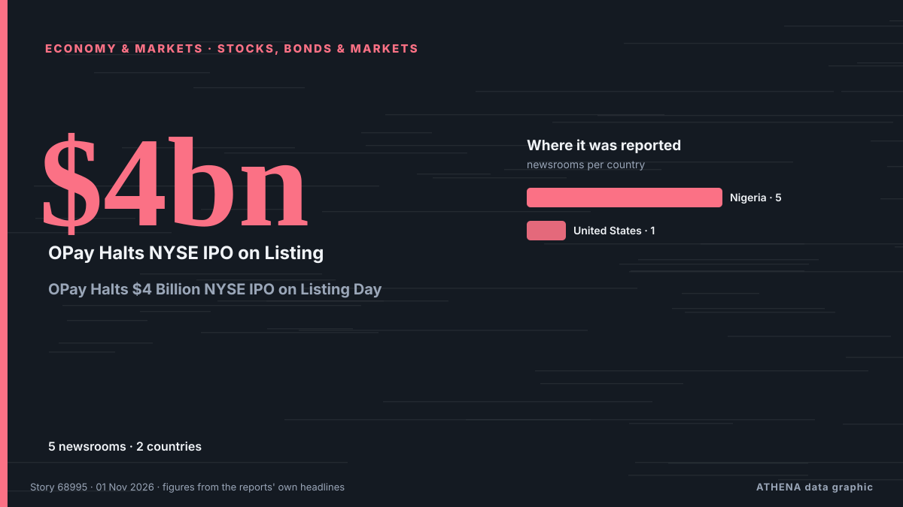

Wirtschaft, Finanzen und Märkte
Schlagzeilen werden auf Englisch angezeigt, wie veröffentlicht.
Marktmonitor - amtliche Werte
In welche Richtung sich amtliche Marktkennzahlen bewegen - steigend, fallend oder unverändert - mit dem letzten amtlichen Wert und seinem Datum sowie den von ATHENA bestätigten Marktnachrichten. Amtliche Werte, keine Echtzeitkurse.
Energie
| 1 Tag | 1 Woche | 1 Monat | Amtlicher Wert | |
|---|---|---|---|---|
| Brent crude | ▼ | ▲ | ▲ | $123,10/bblAmtliche Daten vom 27. Okt. 2026 |
| WTI crude | ▼ | ▼ | ▲ | $103,37/bblAmtliche Daten vom 27. Okt. 2026 |
| US natural gas (Henry Hub) | ▲ | ▼ | ▼ | Ungewöhnliche Bewegung $2,76/MMBtuAmtliche Daten vom 27. Okt. 2026 |
| European natural gas (1 Monat · 3 Monate · 12 Monate)(1M · 3M · 12M) | ▲ | ▲ | ▲ | $25,49/MMBtuAmtliche Daten vom 1. Sept. 2026 |
| Coal (Australia) (1 Monat · 3 Monate · 12 Monate)(1M · 3M · 12M) | ▲ | ▲ | ▲ | $153,84/tAmtliche Daten vom 1. Sept. 2026 |
Nahrungsmittel
| 1 Monat | 3 Monate | 12 Monate | Amtlicher Wert | |
|---|---|---|---|---|
| Wheat | ▲ | ▲ | ▲ | $246,85/tAmtliche Daten vom 1. Sept. 2026 |
US-Aktienmärkte
| 1 Tag | 1 Woche | 1 Monat | Amtlicher Wert | |
|---|---|---|---|---|
| S&P 500 | ▼ | ▲ | ▲ | Nur Richtung (Index © Cboe)Amtliche Daten vom 29. Okt. 2026 |
| Nasdaq Composite | ▼ | ▲ | ▼ | Nur Richtung (Index © Cboe)Amtliche Daten vom 29. Okt. 2026 |
Zinsen, Risiko und Dollar
| 1 Tag | 1 Woche | 1 Monat | Amtlicher Wert | |
|---|---|---|---|---|
| US 10-year Treasury yield | ▼ | ▲ | ▼ | 4,98 %Amtliche Daten vom 29. Okt. 2026 |
| Market volatility (VIX) | ▲ | ▼ | ▲ | Nur Richtung (Index © Cboe)Amtliche Daten vom 29. Okt. 2026 |
| US dollar, broad index | ▬ | ▬ | ▲ | 121,32Amtliche Daten vom 23. Okt. 2026 |
Der Euro gegenüber anderen Währungen
| 1 Tag | 1 Woche | 1 Monat | Amtlicher Wert | |
|---|---|---|---|---|
| EUR/USD | ▲ | ▼ | ▼ | 1,1172 USDAmtliche Daten vom 30. Okt. 2026 |
| EUR/GBP | ▼ | ▼ | ▼ | 0,8338 GBPAmtliche Daten vom 30. Okt. 2026 |
| EUR/CHF | ▼ | ▼ | ▼ | 0,9194 CHFAmtliche Daten vom 30. Okt. 2026 |
| EUR/JPY | ▼ | ▲ | ▼ | 175,68 JPYAmtliche Daten vom 30. Okt. 2026 |
| EUR/CNY | ▲ | ▼ | ▼ | 7,4326 CNYAmtliche Daten vom 30. Okt. 2026 |
| EUR/TRY | ▲ | ▲ | ▲ | 55,801 TRYAmtliche Daten vom 30. Okt. 2026 |
| EUR/NOK | ▼ | ▼ | ▼ | 10,3120 NOKAmtliche Daten vom 30. Okt. 2026 |
Quellen: US Energy Information Administration (Öl, US-Erdgas), IWF (europäisches Erdgas, Kohle, Weizen), US-Finanzministerium und Federal Reserve (10-jährige Rendite, Dollar-Index) Cboe (VIX), S&P Dow Jones Indices (S&P 500) und Nasdaq (Nasdaq Composite), über FRED (Federal Reserve Bank of St. Louis); Euro-Referenzkurse © Europäische Zentralbank. Die Werte sind die letzten amtlichen Zahlen mit Datum, keine Echtzeitkurse. Die Richtungen berechnet ATHENA.
Krypto, ETFs und Aktien in den Nachrichten
- OPay Halts $4 Billion NYSE IPO on Listing Day Risiko 0.0 1. Nov.
- Binance resumes withdrawals after $6bn crypto hack Risiko 2.9 1. Nov.
- S&P cuts Meta’s outlook to negative Risiko 3.6 1. Nov.
- Judge dismisses Trump's lawsuit against Wall Street Journal over Epstein birthday book Risiko 2.2 1. Nov.
- Potentially historic drop for Alphabet's stock drags US market lower Risiko 5.2 1. Nov.
- FBI blames North Korea for US$6 billion Binance crypto hack Risiko 3.4 1. Nov.
- Crypto exchanges call for quick moves to bolster defences after Binance heist Risiko 1.7 31. Okt.
- As it happened: Binance’s record $6.3B crypto hack Risiko 3.5 31. Okt.
- Crypto Biz: Bitcoin’s quantum threat is becoming an economic problem Risiko 1.4 31. Okt.
- Nasdaq faces $2 trillion wipeout in October as AI spending fears deepen Risiko 1.6 31. Okt.

Aktien, Anleihen und MärkteOPay Halts $4 Billion NYSE IPO on Listing Day
OPay, a digital financial platform built for emerging markets, has decided to postpone its planned initial public offering due to “an ongoing inquiry by a regulatory authority,” the company said in a… von PYMNTS
| 19. Okt. | 37 |
|---|---|
| 20. Okt. | 9 |
| 21. Okt. | 34 |
| 22. Okt. | 82 |
| 23. Okt. | 61 |
| 24. Okt. | 28 |
| 25. Okt. | 29 |
| 26. Okt. | 119 |
| 27. Okt. | 131 |
| 28. Okt. | 127 |
| 29. Okt. | 100 |
| 30. Okt. | 104 |
| 31. Okt. | 22 |
| 1. Nov. | 25 |
Treasury minister: ‘I don’t think employers are working people’
A top treasury minister has said she does not think “employers are working people” reigniting fierce debate over whether Labour broke its manifesto pledge not to raise taxes for working people. von City A.M.
Israeli army arrests 5 Palestinians in West Bank raids
Israeli forces raid homes of Palestinians in Nablus, Qalandiya refugee camp, according to Palestinian Prisoners’ Media Office. von Anadolu Agency (English)
Potentially historic drop for Alphabet's stock drags US market lower
A potentially historic drop for Alphabet’s stock is dragging the U.S. market lower Thursday after the company behind Google and YouTube reported weaker growth for the summer than analysts expected. von The Korea Times
Trick or treat? Police respond to more than 100 disturbances over Halloween
In Luxembourg City two individuals threw fire crackers at officers. von Luxembourg Times
CJP backs INDIA bloc's Ramlila Maidan rally, but won't participate in it, says Dipke; cites ‘neutral platform’ identity
Abhijeet Dipke said the CJP supported the cause but would maintain its independent identity. von Hindustan Times
ECB President Lagarde to step down on 7 February 2027
European Central Bank President Christine Lagarde will step down on Feb. von CNBC Economy
How Kalshi can help the Federal Reserve
Prediction markets may be a win for central banking. von The Economist - Finance & economics
Scam centres relocated from Cambodia raided in Madagascar
Raids against online scam centres in Madagascar have exposed ties with a criminal group that ran similar operations in Cambodia, also duping African nationals via human trafficking, authorities say. von Bangkok Post
Pi-Shaped Storm Hits Greece as EMY Issues Emergency Warning
A Pi-shaped storm brings heavy rain, thunderstorms and possible hail to western and northern Greece and the eastern Aegean, EMY warns. von Greek City Times
FBI blames North Korea for US$6 billion Binance crypto hack
Binance says a security breach impacted about $6.3 billion in assets. von CNBC World
Binance replenishes 90% of assets stolen in security incident
The exchange said it remained on track to resume withdrawal services on Sunday, November 1, within its previously stated timeframe. von The Jerusalem Post
Governor Punjab assures support to addressing key issues of business community
ISLAMABAD: Governor Punjab Sardar Saleem Haider Khan on Saturday assured the business community of the federal capital of his support in resolving its longstanding issues, including the establishment… von Business Recorder
Tech sell-off and Binance hack rattle investors
Amazon and Intel worsen the sell-off with disappointing earnings releases. von CNBC World
Liquidators agree sale of China Evergrande property management unit
Asia Pacific-focused investment firm PAG will buy a majority stake in Evergrande Property Service for HK$4 billion (US$514 million). von CNA (Channel NewsAsia)
WHO statement on notification of withdrawal of the United States
WHO regrets the United States’ notification of withdrawal from WHO – a decision that makes both the United States and the world less safe. von WHO news
Italy demands release of another group of activists detained in West Bank
(ANSA) - ROME, 30 OTT - The Italian Foreign Ministry has called for the "immediate release" of five Italian activists detained in the West Bank on Thursday while accompanying Palestinian farmers… von ANSA English
Bank of Canada maintains the policy rate at 2¼%
The Bank of Canada today held its target for the overnight rate at 2.25%, with the Bank Rate at 2.5% and the deposit rate at 2.20%. von Bank of Canada
Crypto exchanges call for quick moves to bolster defences after Binance heist
A record US$6.3 billion hack of Binance exposes its vulnerability. von The Business Times
Three bonus winter payments worth £550 for DWP state pensioners over 80
State pensioners living in council tax bands A to D will receive a £100 handout. von Birmingham Mail
Warren Buffett hasn't had a drink of water in 50 years. At least, that's what he told Bill Ackman.
Bill Ackman says he once asked Warren Buffett if he drinks water. von Business Insider
Thousands of “ghost students” use AI to steal millions in student loans, DOJ says
Applying for FAFSA may get messy as DOJ “ghost student” crackdown ramps up. von Ars Technica
As it happened: Binance’s record $6.3B crypto hack
How Binance’s $6.3 billion hack unfolded, from the first onchain alerts to $3 billion in frozen funds and a widening security investigation. von Cointelegraph
Gold Slides to 13-Month Low as Rising Energy Prices Weigh on Markets
LONDON, Oct 30: Gold prices fell below $3,900 an ounce on Friday, hitting their lowest level in 13 months as persistently high global energy prices continued to weigh on precious m... von Arab Times
Chainalysis discloses data breach from "offensive agentic techniques"
Blockchain analytics firm Chainalysis disclosed a data breach after attackers used "offensive agentic techniques" to access internal systems and tools, exposing customer names, email addresses, user… von BleepingComputer
Govt Partners with Control Union Academy to Boost Quality of Uganda's Agricultural Exports
Bethany thought only veterans and first responders got PTSD. Then she gave birth
Thousands of parents and experts have made submissions about gaps in postpartum healthcare to a parliamentary committee on women’s health, which will hold its first hearing on Monday in Sydney. von Sydney Morning Herald
Nasdaq faces $2 trillion wipeout in October as AI spending fears deepen
More than $2 trillion in market value is set to be wiped from the tech-heavy Nasdaq 100 this month, as Big Tech earnings intensified investor scrutiny of whether the billions being poured into… von The Korea Times
Andy Burnham issues 8-word response after Budget as the UK 'needs change'
The Prime Minister has shared his verdict after Chancellor John Healey delivered the Budget on Wednesday. von Liverpool Echo
Bitcoin price falls below $80,000 again
Cryptocurrency prices continued to decline, with all major digital assets recording losses over the past 24 hours, according to data from CoinMarketCap. von AzerNews
Canada Pledges €500M Toward EU’s €90B Ukraine Loan
Canadian Prime Minister Mark Carney announced on Friday, Oct. von Kyiv Post
Treasury Says Iran’s Economy Is Crippled
The report does not claim the Iranian government is close to collapse, but says the rial has lost about a quarter of its value since August, inflation has reached 90%, and no oil has been loaded onto… von Kurdistan24 (English)
European Commission proposes 45 billion euros in funding for Ukraine for 2027
Of this amount, 31.7 billion euros would go toward weapons purchases. von TASS (English)
France faces long-term debt risks despite no immediate crisis, Eurobank says
France is not facing an immediate risk of a public debt crisis comparable to the eurozone turmoil of the 2010s, but persistent deficits, weak economic growth and rising borrowing costs pose… von Cyprus Mail
Bank of Japan's Transactions with the Government (Sept.)
Although core consumer inflation occasionally exceeded the target in the early 2020s, Friday marked the first time the Bank of Japan confirmed that its long-term inflation goal had been achieved. von Free Malaysia Today